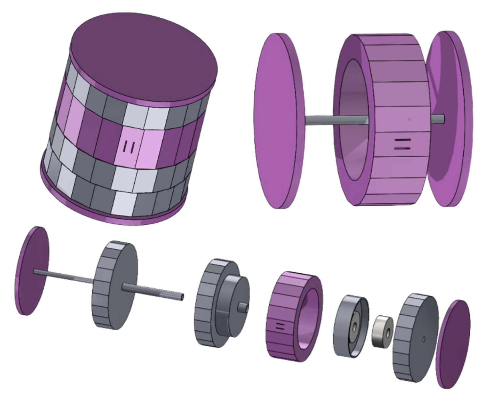
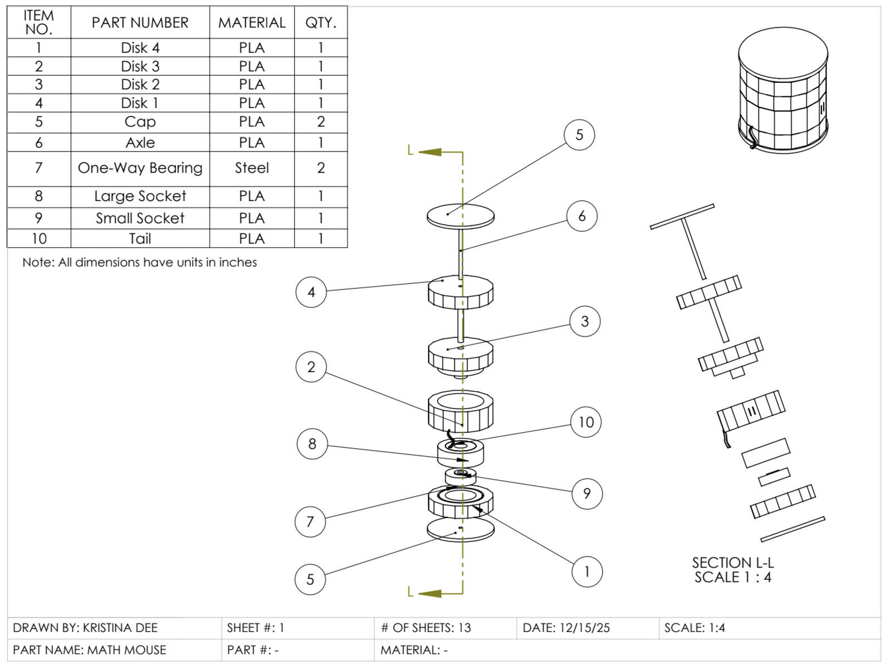
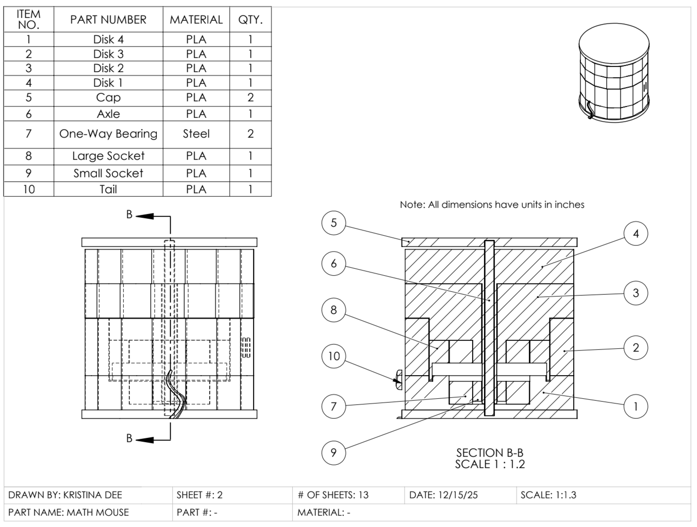

Math Mouse
An arithmetic toy for four-to-seven-year-olds that does single-digit addition and subtraction with no electronics and no part a child can remove.

Problem
Children typically grasp addition and subtraction between pre-kindergarten and early first grade, and the toys aimed at that window each give something up. Counting blocks and rods build number sense but rely on separate pieces that get lost and present a choking hazard. Digital toys are interactive but add cost, electronics and batteries while discouraging fine motor development. Number lines and abacuses are self-contained but are really tools rather than toys — they do not guide a child through setting up a problem and getting an answer.
We wanted the self-contained safety of an abacus with the guided mechanism of a toy, which set the hard constraint: no small loose parts, nothing removable in the assembled product.
How it works
The toy is a 3-inch cylinder of four stacked disks on a fixed central shaft. The caps, the shaft and the equals-sign plate are all fixed to each other, and the tail feature ties that plate to the cap so the whole fixed frame moves as one.
Input disk 1 sets the first operand, showing 0 to 5. Input disk 2 sets the second, from −5 to +5. Each input disk connects to the output disk through its own one-way bearing, and the two bearings face opposite directions: disk 1 drives the output only when turned counterclockwise, disk 2 only when turned clockwise. So addition advances the result and subtraction retreats it, both through the same mechanism, and neither input can be dragged backwards when the output turns.
Invalid ranges are handled visually rather than mechanically. The output is constrained to 0 through 10, and the faces that would show a negative answer are shaded out, which keeps the toy focused on the arithmetic a five-year-old is learning without adding a hard stop that could break.


The decision that mattered
We first tried to 3D-print the one-way bearings, to keep the whole toy printable and the cost near zero. They did not work. The printed bearings wobbled enough that the disks drove each other out of sync, and in a toy whose entire function is that two inputs sum to a correct answer, intermittent engagement is not a cosmetic flaw — it gives the child the wrong number.
We switched to stock one-way bearings from McMaster-Carr. That gave up some of the cost-and-reproducibility argument for printing everything, and bought a mechanism that works every time. The rest of the toy stayed PLA, so the design is still cheap to reproduce; precision is now concentrated in the two parts that need it.
What’s untested
The design is resolved to a buildable bill of materials but has not been put in front of a child, and two questions can only be answered that way. Whether the disks index firmly enough that a four-year-old feels a face land, rather than leaving it halfway between two numbers — a detent would fix that, at the cost of torque through the bearings. And whether shading the invalid range is enough, or whether a child will turn past it anyway and read a shaded face as an answer. A hard stop would prevent it outright, but adds a part that can break under a determined four-year-old, which is the hazard the whole design was built to avoid.
- Course
- Computer Graphics & Design
- Tools
- SolidWorks, 3D printing (PLA)
- Target user
- Ages 4–7